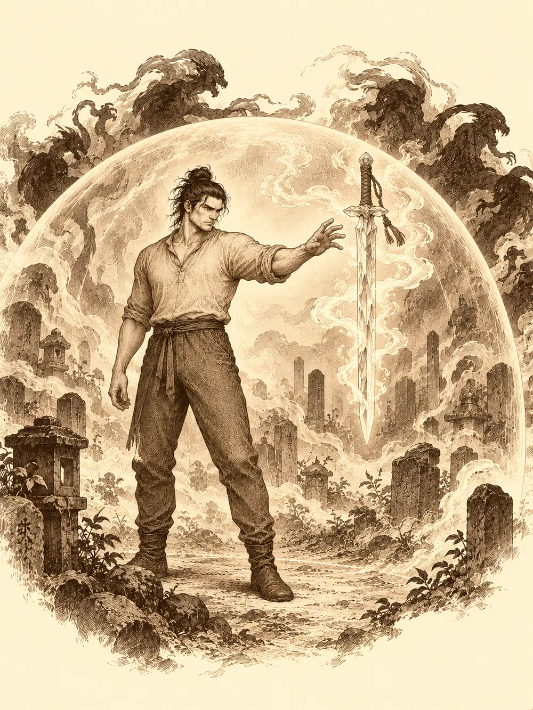

Capítulo 59
La espada de cristal
Libro IV · Los guardianes del Oeste y del Este
Maroxi bajó del barco en Hakara con las piernas todavía hechas al balanceo y una queja preparada desde hacía días.
"El barco era cosa mía".
Lo había negociado él, había mandado la madera, había ido a ver cómo crecía el casco en la aldea pesquera. Y sus compañeros habían zarpado con él hacia el norte sin esperarlo. Corco e Higeki lo escucharon en la taberna de Anko con la cara de quien no tiene mucho que alegar. A su lado, Hino Yama, el mago de escamas y aliento de dragón, que hacía mucho que no se dejaba ver por los cazadores, se reía entre dientes. Había seguido su propia cruzada todo aquel tiempo, persiguiendo a cierto demonio, y ahora sus caminos volvían a cruzarse con los de aquella gente que él llamaba impresentables.
Pasaron la tarde bebiendo y poniéndose al día, que no era poco. Había templos, guardianes, una guardia nueva del shogun que no sabía leer y un pequeño yokai rojo que entrenaba a Gur. Corco lo resumía todo a su manera, con la trompetilla atada a la oreja, que le dejaba oír un poco más fuerte aunque no mucho más claro. Maroxi, que había estado trabajando en la alquimia y practicando transformaciones en cosas cada vez más pequeñas, consultó su libro en busca de algún remedio para la sordera del viejo. No encontró ninguno.
La posadera les sirvió cuatro puñados de arroz a regañadientes. Maroxi decidió que no pensaba dormir allí.
Salió a recorrer el pueblo y, de todas las puertas con cartel, eligió la de la alquimista. Dentro olía a hierbas secas y a algo agrio que hervía en un rincón. Una mujer se giró al oírlo entrar sin soltar el frasco que tenía en las manos.
"Adelante, adelante. Dime".
Maroxi se presentó con cortesía. Había trabajado con un alquimista en el sur, explicó, y buscaba un sitio donde quedarse a cambio de ayudar en el taller. La mujer lo miró de arriba abajo.
"No estás mal, pero mi marido se enfadaría".
Él se apresuró a aclarar que no buscaba eso. Ella sonrió. Se llamaba Chikako. Le dijo que no podía prometerle nada sin hablarlo con su marido, y que antes quería verlo fabricar algo, para saber si de verdad sabía lo que hacía. Maroxi sacó su volumen de alquimia para demostrarle su interés, y del equipaje se le cayó al suelo un trozo de metal: un fragmento de armadura antigua, con un emblema grabado, que llevaba encima desde una batalla contra muertos que no debían haberse levantado.
Chikako lo recogió y le cambió la cara. Aquello tenía valor histórico, dijo. No era ella quien debía verlo. En el dojo del pueblo había un maestro que sabía de esas cosas.
El maestro Saya no estaba de humor. Los recibió en la puerta del dojo quejándose de los extranjeros que llegaban cada día pidiéndole la técnica marcial más poderosa del mundo para hacerse fuertes en una tarde. Maroxi hizo una reverencia de las que se enseñan en las casas nobles y le dijo que él no venía a aprender nada, que venía a enseñarle algo.
"¿Tú a mí? ¿Qué me vas a enseñar tú a mí?".
Maroxi sacó el fragmento. El maestro se lo quitó de las manos antes de que terminara la frase, lo llevó a una mesa y lo estudió con una lente, muy de cerca, en silencio. Luego levantó la vista.
"Es auténtico. ¿Dónde has encontrado esto?".
Los hizo pasar y sentarse. Maroxi le contó lo de los muertos, unos árboles que les habían devuelto la vida, la batalla. Saya asintió despacio, como quien oye confirmada una sospecha que no quería tener.
"Entonces es cierto. El poder de Otakemaru está volviendo".
Les contó lo que sabía. Aquella armadura había pertenecido a un ejército de una civilización antigua de Kuroto, desaparecida hacía muchísimo tiempo. Los héroes que se enfrentaron a Otakemaru eran de ese ejército. Mientras los soldados luchaban contra el gran monstruo y caían masacrados, los héroes lograron alcanzar su punto débil y derrotarlo. Pero no consiguieron matarlo. Lo encerraron en el sur, malherido. Las leyendas decían que volvería.
Los pocos supervivientes enterraron a algunos de los caídos no muy lejos de Hakara, en un cementerio. Se decía que sus espíritus todavía vagaban por allí, susurrando cosas de espadas.
Maroxi preguntó por armas. Había leído en sus libros algo de una espada poderosa de aquel tiempo. Saya le habló de las espadas de cristal que usaba aquella civilización. Corco opinó en voz alta que el cristal se rompía, y que lo suyo era hacerlas de acero.
"Son armas mágicas, muchacho".
"¿Muchacho? Podría ser tu abuelo".
Si quedaba alguna, añadió el maestro, sería en aquel cementerio, aunque le extrañaría: el lugar llevaba siglos azotado por saqueadores y por cosas peores. Y estaba maldito. Si Otakemaru había vuelto, los muertos volverían también. Luego sacó un mapa de Kuroto y les marcó dos lugares: el cementerio, a poco más de una hora hacia el norte, y unas montañas algo más allá donde las leyendas situaban el templo del norte, un sitio que decían peligroso y protegido por guardianes. Maroxi le pidió el mapa prestado. A cambio, le dejaría estudiar el fragmento de armadura.
"Por supuesto".
Corco aprovechó para preguntar si había alguna mina por allí. Saya le respondió que los materiales que se sacan dependen de la maestría de quien pica, y el viejo, que llevaba semanas sacando solo piedra y carbón, estuvo a punto de tomárselo a mal.
En la calle, Maroxi les propuso empezar por el cementerio. Estaba más cerca que el templo, y si aquellas armas existían, quizá les sirvieran contra lo que venía. Higeki le dijo que el arma más poderosa era el amor y se ofreció a cantarle por el camino la historia de dos amantes que acabaron muertos los dos. Corco no puso pegas. Faltaba Hino Yama, que se había quedado tumbado en una cama de la taberna.
Para llegar a él había que pasar por delante de Anko. Maroxi lo intentó de puntillas y agachado, y la posadera le tiró una taza a la cabeza.
"¿Qué haces andando así como un tonto?".
"No quería perturbar su merecido descanso, señora".
El mago dragón se levantó en cuanto oyó que habría demonios. O muertos, o algo maldito. Le daba igual. Llevaba demasiado tiempo aburrido.

Antes de salir, Maroxi volvió a la tienda de Chikako para demostrarle sus habilidades. Se puso a preparar una poción para trepar delante de ella, y la mezcla se le estropeó en el cazo con un humo gris que olía a quemado. La alquimista no se rio. Le dijo que tenía que practicar más y que ya hablarían de lo del alojamiento.
El camino empezaba agradable, entre granjas y casitas, y luego se desviaba hacia el norte por un sendero de tierra que se metía en un bosque. Los árboles no tenían hojas. A los pocos minutos se dieron cuenta de que no se oía nada. Ni pájaros, ni insectos, ni el roce de algún animal entre la hojarasca. El aire mismo parecía quieto.
"¿Soy yo, que estoy sordo, o aquí no se oye nada?".
"Esta vez yo tampoco oigo nada, Corco".
Higeki sacó la gaita y se puso a tocar para darles ánimo.
Las tumbas aparecieron de pronto, a la luz de la luna. Eran millares, antiguas, y casi todas estaban abiertas. Había cadáveres a la vista, desvalijados, vasijas rotas y piedras volcadas, y era imposible saber si las habían saqueado hacía mil años o hacía dos mil. Alguien se ató una lámpara de aceite al cinto para iluminar el camino. Hino Yama se detuvo y cerró los ojos, tanteando el aire con su magia, y cuando los abrió tenía las escamas erizadas. Todo aquel lugar estaba empapado de un poder oscuro que no se parecía a nada que hubiera sentido antes.
"Tenemos que ir con mucho cuidado".
Al fondo se alzaba la estatua de un soldado, maltratada por el tiempo, con un brazo medio roto y raíces negras trepándole por las piernas. Llevaba la misma armadura que el fragmento de Maroxi, con las mismas runas. En la mano sostenía una empuñadura sin filo, como si la hoja se hubiera roto o se la hubieran arrancado. Delante había una tumba.
Maroxi miró a Corco. A Corco no le gustaba profanar a los muertos, pero hacía rato que se aburría.
"Hazme el favor".
El viejo cavó. La tierra salía en paladas negras, y al cabo de un rato apareció el cadáver de un soldado, con la armadura todavía puesta.
Del cuerpo empezó a salir una nube negra que subió y se fue espesando sobre ellos hasta tomar la forma de un guerrero hecho de sombra, con armadura y espada. Se rio.
"Profanadores. Moriréis aquí".
Hino Yama levantó las manos y el suelo alrededor de la tumba se llenó de un resplandor radiante, enfermizo, que quemaba a la sombra y respetaba a sus compañeros, porque el mago sabía esculpir su magia para dejarlos fuera. Maroxi desenfundó su estoque y se puso a bailar alrededor del espíritu. Corco entró en furia y descargó el pico y el martillo. Higeki tocaba y gritaba ánimos.
El guardián llamó a los suyos. De las tumbas cercanas empezaron a salir más sombras. Sus golpes no hacían sangre: robaban fuerza. Cada vez que uno de ellos tocaba a alguien, el herido sentía que los brazos le pesaban más. Una de aquellas manos alcanzó a Hino Yama y le rompió la concentración; la luz se apagó, y el mago tuvo que volver a encenderla mientras las sombras lo buscaban.
Cayó el defensor principal. Se deshizo en jirones de humo y, de aquel humo, se formó algo que flotaba en el aire a la altura de un hombre. Una espada de cristal.
Maroxi alargó la mano y la tomó.
De la hoja salió una cúpula que empujó hacia fuera a todos los demás y lo dejó a él solo dentro. Ya no oía la batalla. No oía a Higeki, ni la gaita, ni los gritos de Corco. Solo oía una voz.
"Demuéstrame que eres digno".
La espada se le escapó de la mano y lo atacó.
Fuera, sus compañeros seguían luchando contra las sombras sin poder ayudarlo. Dentro, Maroxi peleaba contra un arma que se movía sola. Le lanzó estocadas con su estoque, la golpeó con fuerza psíquica, intentó dañarla con magia. La espada bloqueaba, rebotaba y se reía de él.
"¿No sabes ni blandir una espada? No podrás salvar a tus compañeros".
Volvió a atacarlo tres veces. Maroxi esquivó lo que pudo. Fuera, una de las sombras alcanzó a Corco en el pecho; otra desapareció junto a Higeki para golpearlo por la espalda. Hino Yama, harto, arrojó una bola de fuego en mitad de los muertos.
Dentro de la cúpula, Maroxi entendió por fin que estaba haciendo la pregunta equivocada. No se trataba de vencerla. Soltó el estoque que llevaba en la mano. Lo dejó caer al suelo. Y con la misma fuerza psíquica con la que antes la había golpeado, llamó a la espada hacia sí.
La hoja de cristal giró en el aire, se dio la vuelta y llegó a su mano por la empuñadura, mansa como un animal.
"Por fin demuestras cómo se blande".
La cúpula se deshizo. Maroxi sintió el arma unirse a él como si siempre hubiera sido suya. Era más ligera que cualquier hoja que hubiera tenido, y más afilada. Lo hacía más rápido al apartarse de un golpe. Y cuando la llamó con la mente, a su alrededor aparecieron tres hojas iguales, ilusorias, que flotaban junto a la verdadera y abrían huecos en la defensa de cualquier enemigo hasta que un fallo las rompía.
La pelea de fuera no había terminado. Seguían saliendo sombras de las tumbas, una tras otra. Hino Yama mantenía la luz y lanzaba fuego, rayos y fragmentos punzantes. Higeki curaba a quien podía e intentaba sujetar a alguna sombra con su magia, sin mucha suerte. Corco perdía fuerza con cada golpe que recibía y seguía atacando de todos modos. En un momento, viendo que el mago y el bardo estaban fuera de la luz protectora, cargó a uno con cada brazo y los llevó hasta ella.
"Solo tengo dos brazos".
Las sombras podían moverse por la oscuridad y aparecer donde quisieran, y lo hacían. Entre los cuatro, con la nueva espada de Maroxi ya en la pelea, acabaron con las que quedaban. Corco tumbó a la última con dos golpes seguidos. Luego se hizo el silencio, el mismo silencio de antes, y nadie quiso seguir abriendo tumbas.
Volvieron a Hakara caminando despacio, heridos y agotados. Alguien le pidió a Maroxi que le enseñara lo que había encontrado. Maroxi les enseñó la espada como quien todavía no se lo cree. Los demás veían una empuñadura. Nada más.
Corco quiso probar el cristal con su martillo. Maroxi apartó el arma justo a tiempo.
"¿Pero qué filo? Si no hay nada".
"Es muy sutil. Es una obra de arte".
Él sí lo veía. Un filo finísimo, apenas una línea en el aire, que recogía la luz de la luna y la devolvía en destellos. Y mientras caminaba con la espada en la mano, notó que la hoja vibraba, muy levemente, como si quisiera decirle algo.